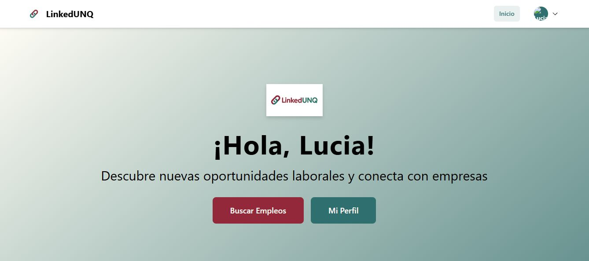
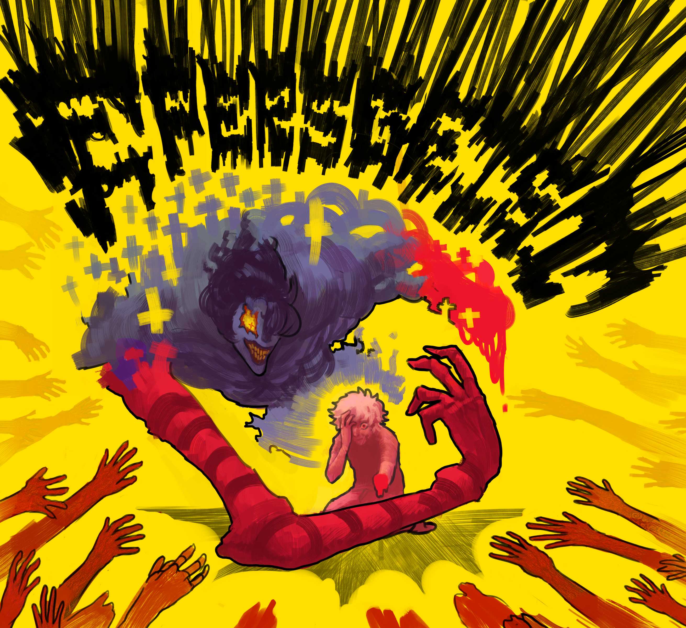
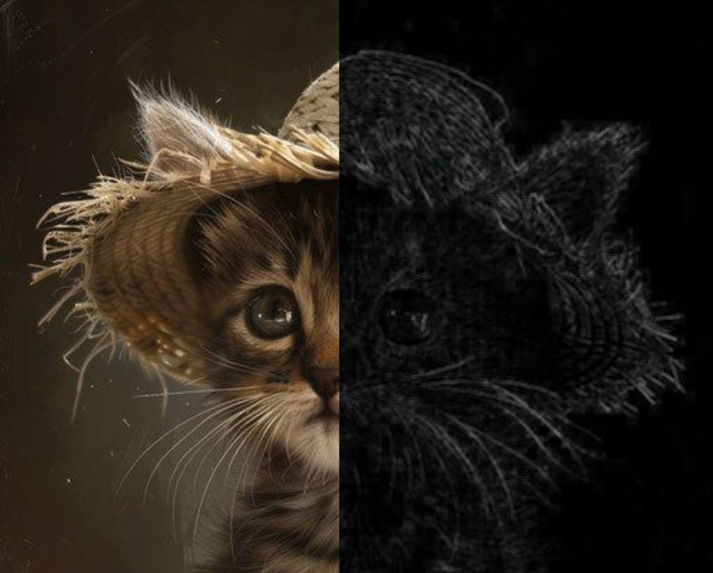
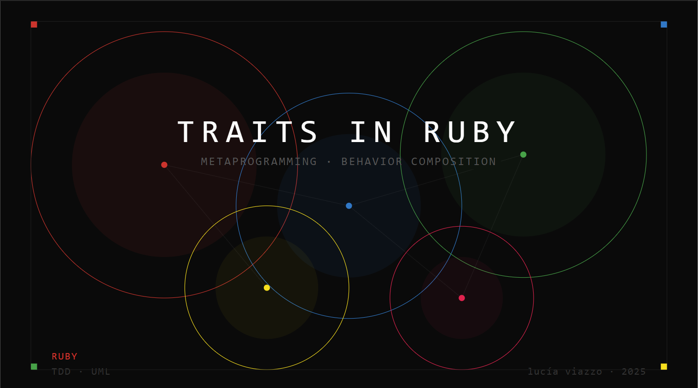

Disfruto resolver problemas y entender cómo funcionan las cosas — eso fue lo que me trajo a la informática. Me interesa construir software sólido, explorar nuevas tecnologías y trabajar los detalles hasta encontrar la mejor solución.
Soy Lucía y estudio la Licenciatura en Informática en la UNQ. Este año termino la Tecnicatura en Programación y continúo la carrera mientras me sigo formando en áreas como el desarrollo de software, IA y datos.
Llegué a la informática porque siempre me gustó entender cómo funcionan las cosas y encontrarle lógica a los problemas. Con el tiempo descubrí que disfruto especialmente desarrollar soluciones desde atrás: pensar estructuras, conectar piezas y lograr que todo funcione.
A lo largo de la carrera trabajé con distintas tecnologías y proyectos que me ayudaron a desarrollar una forma de trabajar muy enfocada en los detalles. Me gusta aprender cosas nuevas, probar herramientas distintas y dedicar tiempo a entender realmente lo que estoy haciendo.
Actualmente estoy buscando mi primera oportunidad en IT para seguir creciendo, ganar experiencia y seguir construyendo proyectos que me desafíen.

Plataforma de empleo para estudiantes de la UNQ, desarrollada en equipo bajo metodologías ágiles y enfocada en conectar perfiles junior con empresas del sector tecnológico.
El sistema implementa roles de estudiante, empresa y administrador. Incluye creación y validación de perfiles, publicación de ofertas laborales, exploración de búsquedas y gestión de postulaciones dentro de una misma plataforma.

Sistema backend desarrollado en Java, construido de forma incremental para integrar múltiples estrategias de persistencia dentro de una misma arquitectura.
El proyecto combina bases de datos relacionales, orientadas a documentos, grafos y caché, aplicadas sobre un dominio complejo modelado mediante una API REST y arquitectura multicapa.

Sistema de procesamiento de imágenes desarrollado para comparar el rendimiento entre ejecuciones secuenciales y concurrentes mediante filtros convolucionales.
El proyecto incluye configuración dinámica de workers y buffers, generación automática de benchmarks y análisis de resultados utilizando scripts de visualización de datos en Python.

Extensión del lenguaje Ruby mediante metaprogramación para incorporar el patrón de diseño Traits, explorando composición de comportamiento en tiempo de ejecución.
El proyecto se enfoca en el uso de metaprogramación en Ruby y en la comprensión de cómo pueden extenderse los lenguajes para modelar nuevos mecanismos de reutilización de código.